wop-swirl-bold.svground 1 (for comparison)

wop-swirl2-framed-clean.svgWeb ends inside the canvas, open orange top right like the Houdini logo
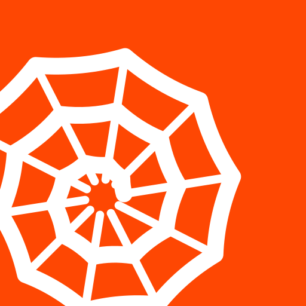
wop-swirl2-framed-loose.svgSame, 8 spokes and wider pitch for small sizes
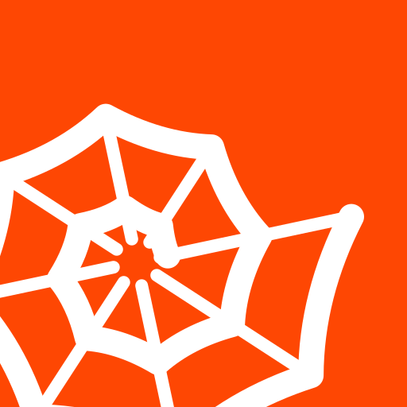
wop-swirl2-framed-tapered.svgSame, thread widens outward like the Houdini band
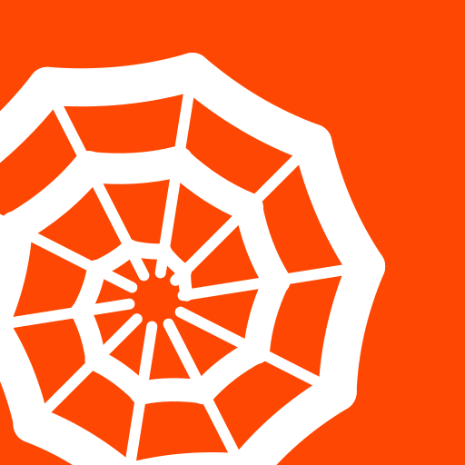
wop-swirl2-framed-dot.svgSame, open hub with a dot
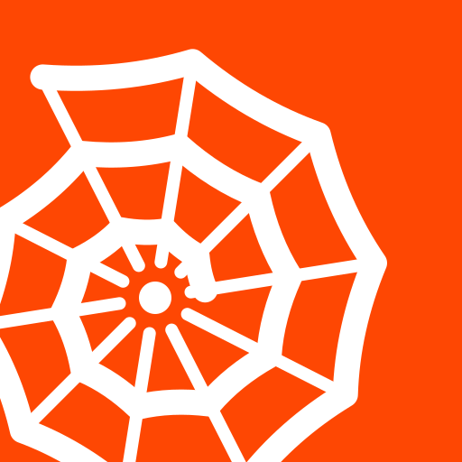
wop-swirl2-framed-clockwise.svgSame, spiral winds the other way
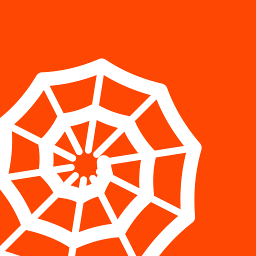
wop-swirl2-framed-even.svgSame, spokes and thread one weight
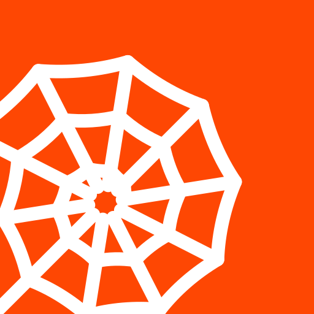
wop-swirl2-ring-clean.svgSpiral inside a closed frame ring: no loose outer end
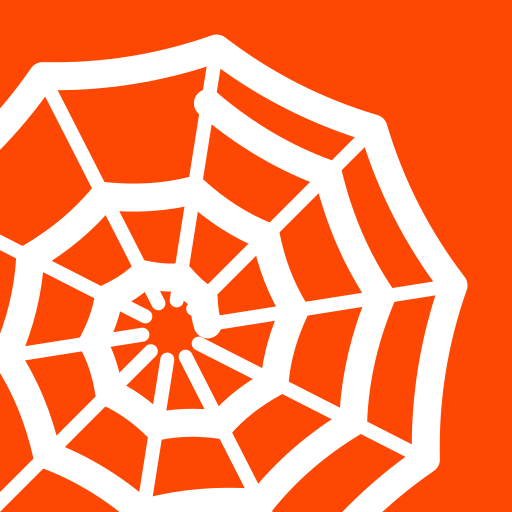
wop-swirl2-ring-dot.svgFrame ring, open hub with a dot
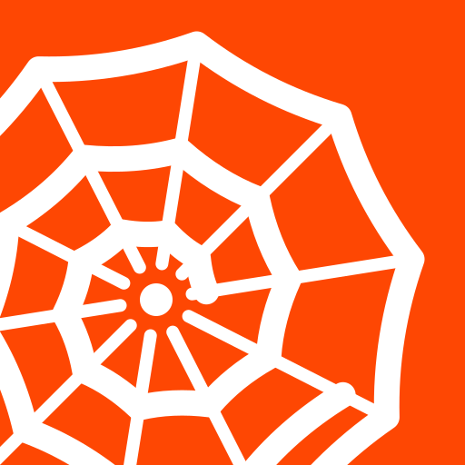
wop-swirl2-ring-loose.svgFrame ring, 8 spokes, wide pitch
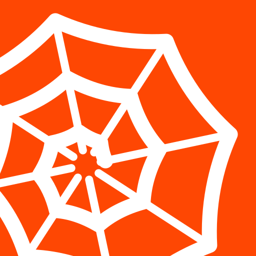
wop-swirl2-ring-band.svgFrame ring as a heavy band, thinner spiral inside
wop-swirl2-ring-big.svgFrame ring, bigger web cropped on three sides
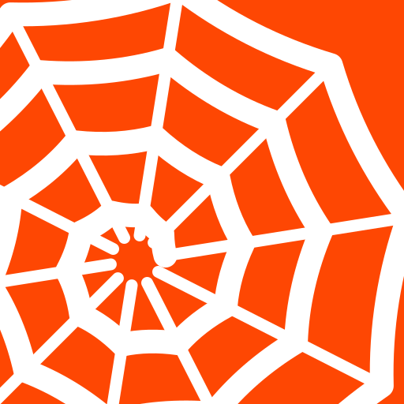
wop-swirl2-framed-big.svgBigger web, cropped on three sides
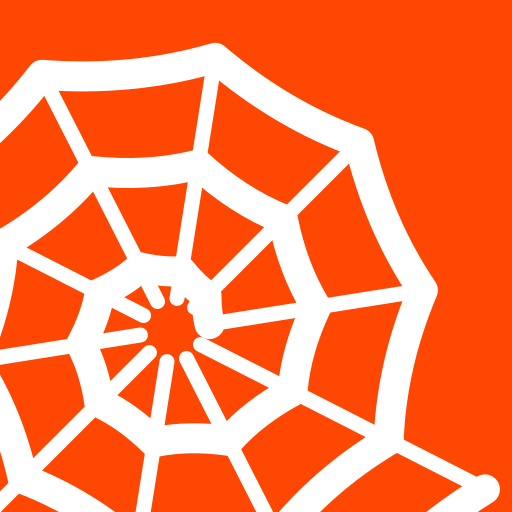
wop-swirl2-clean.svgBold as before, but spokes and spiral run off the canvas, spokes rotated 9 degrees
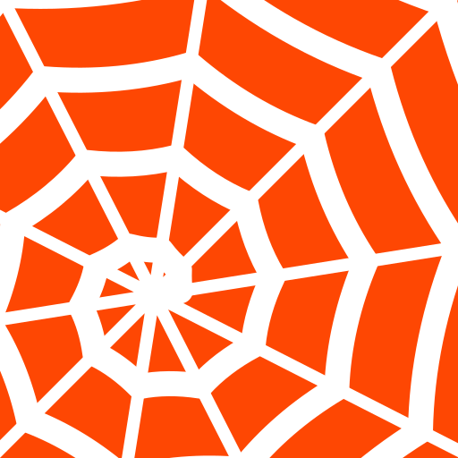
wop-swirl2-open-hub.svgSpokes stop short of the center, spiral starts with an inner curl
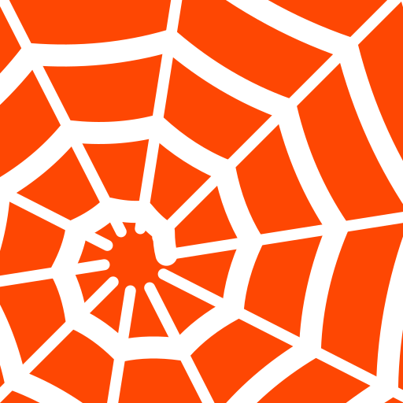
wop-swirl2-hub-dot.svgOpen hub with a solid dot in the middle
wop-swirl2-clockwise.svgSpiral winds the other way
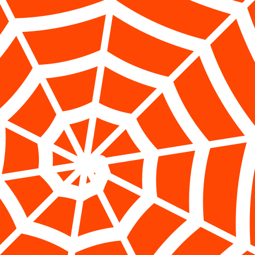
wop-swirl2-loose.svg8 spokes, wider pitch, more sag: bolder and better at small sizes
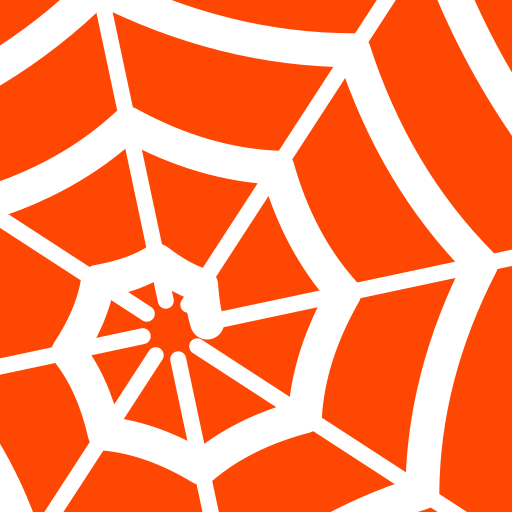
wop-swirl2-tapered.svgSpiral thread widens outward like the Houdini band
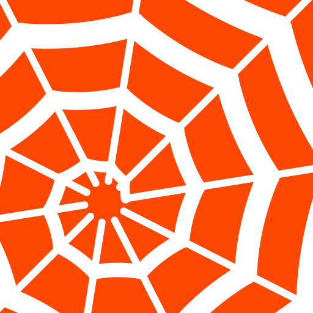
wop-swirl2-even.svgSpokes and thread the same weight
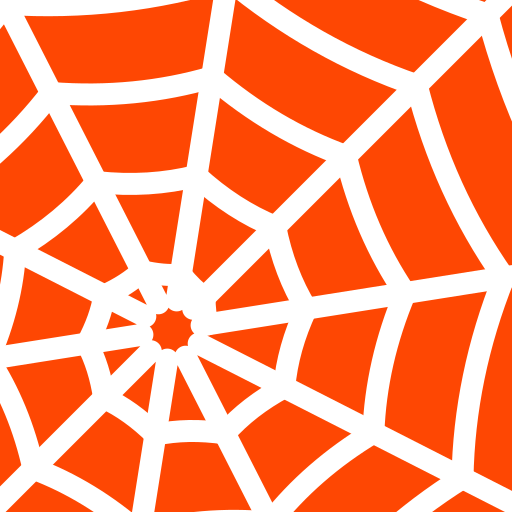
wop-swirl2-low-hub.svgHub further down and left, more of the web cropped
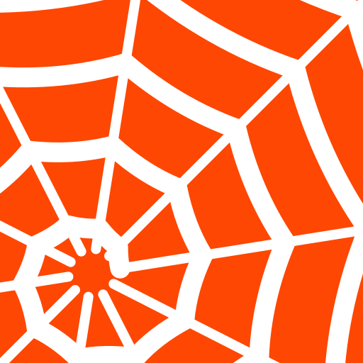